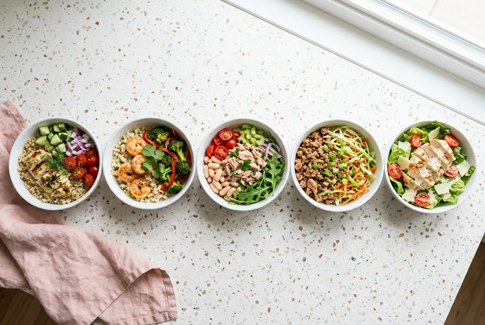
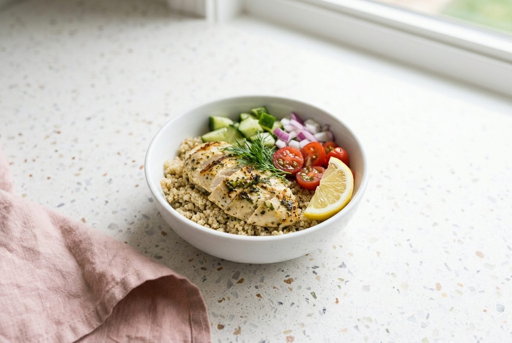
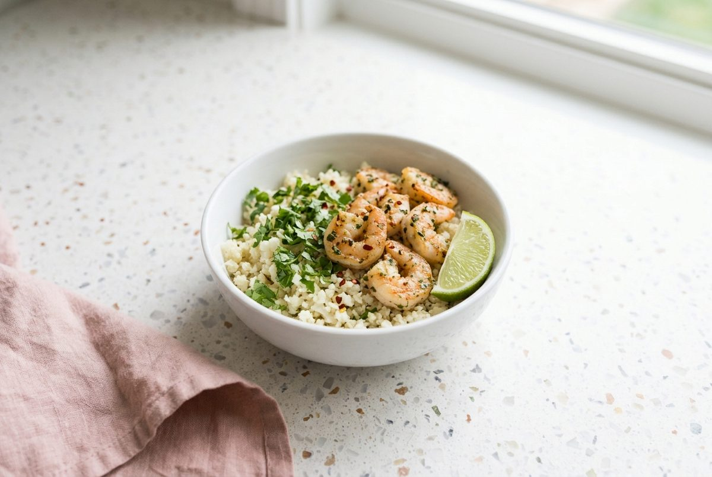
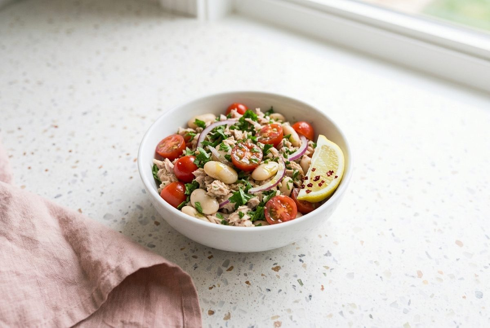
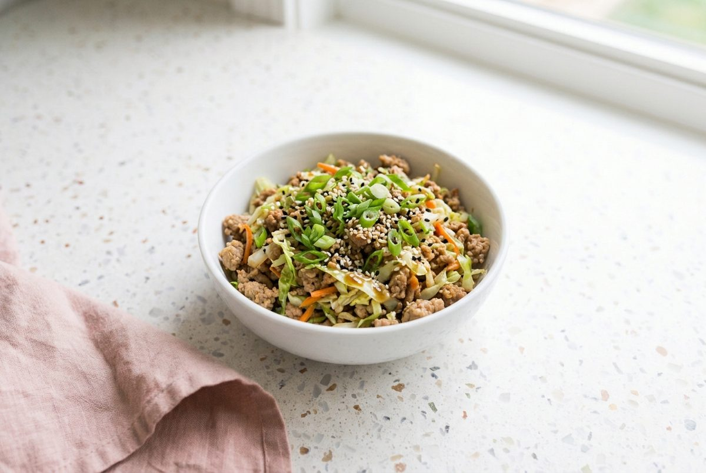
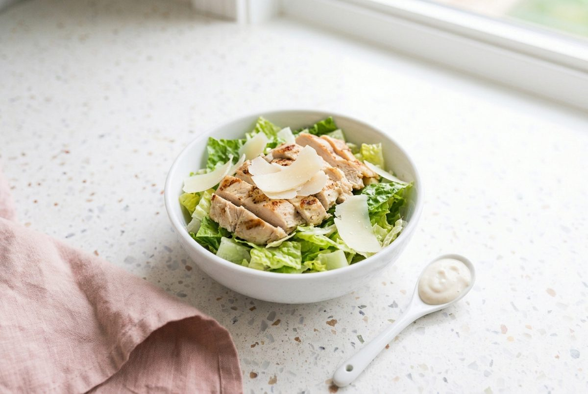
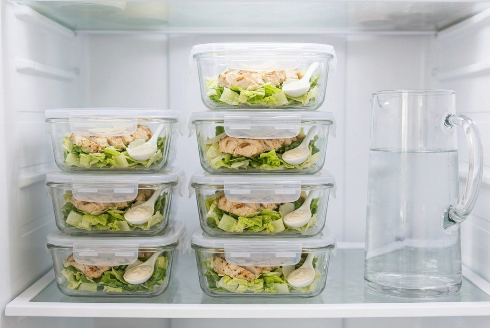

5 High Protein Low Calorie Lunch Bowls Under 400 Calories (34g+ Protein Each)
Per serving, one container of each bowl. Nutrition is an estimate and varies with brands.

These 5 high protein low calorie lunch bowls under 400 calories make easy high protein work lunches. Every bowl has at least 34g of protein, and the highest one is only 346 calories per serving.
Each recipe makes 4 containers and comes with US and metric measurements, a short method and its own macros. Most take 10 to 30 minutes, and the tuna and white bean bowl needs no cooking at all. Pick one bowl for the week, or cook two and mix them for variety.
Chicken, shrimp (prawns), tuna and turkey keep the protein high, while vegetables and measured grains keep the calories low. Use the table below to choose, then follow the batch cooking order near the end.
Compare the 5 Bowls
| Bowl | Protein | Calories | Prep time |
|---|---|---|---|
| Lemon Herb Chicken Quinoa Bowl | 42g | 340 | 30 min |
| Garlic Shrimp Cauliflower Rice Bowl | 37g | 233 | 20 min |
| Tuna and White Bean Bowl | 34g | 282 | 10 min |
| Turkey Egg Roll Bowl | 35g | 333 | 20 min |
| Chicken Caesar-Style Salad Bowl | 50g | 346 | 25 min |
Prep time includes cooking. Allergens across the five bowls: fish, shellfish, milk, soy, sesame and gluten (in soy sauce).
1. Lemon Herb Chicken Quinoa Bowl

Ingredients
- 1.5 lb (680g) boneless skinless chicken breast
- 1 tbsp (15ml) olive oil
- 3 tbsp (45ml) lemon juice (about 1.5 lemons)
- 3 cloves garlic, minced
- 1 tsp dried oregano
- 1/2 tsp salt
- 1/4 tsp ground black pepper
- 1/2 cup (85g) dry quinoa
- 1 medium cucumber, diced (about 7 oz / 200g)
- 1 cup (150g) cherry tomatoes, halved
- 1/2 small red onion, diced (about 2 oz / 50g)
- 2 tbsp (8g) chopped fresh dill
Instructions
- Whisk the lemon juice, olive oil, garlic, oregano, salt and pepper in a shallow dish. Add the chicken, turn to coat and leave it for 15 minutes.
- Rinse the quinoa. Add it to a pot with 1 cup (240ml) water and bring to a boil. Cover, lower the heat and simmer for 15 minutes, then fluff with a fork.
- Cook the chicken in a hot skillet (frying pan) or grill pan over medium-high heat for 6 to 8 minutes per side, until it reaches 165°F (74°C) in the thickest part. Rest for 5 minutes, then slice.
- Divide the quinoa between 4 containers. Top with the chicken, cucumber, tomatoes and red onion, then finish with the dill.
Per serving: 42g protein, 340 calories, 20g carbs, 9g fat. Nutrition is an estimate and varies with brands.
2. Garlic Shrimp Cauliflower Rice Bowl

Ingredients
- 1.5 lb (680g) peeled raw shrimp (prawns), tails off
- 1.5 tbsp (20ml) olive oil, divided
- 5 cloves garlic, minced
- 1/2 tsp red pepper flakes (chili flakes)
- 1/2 tsp salt
- 20 oz (570g) cauliflower rice, fresh or frozen
- 2 limes: 1 juiced (about 2 tbsp / 30ml) and 1 cut into 4 wedges
- 1/4 cup (10g) chopped cilantro (coriander)
Instructions
- Pat the shrimp dry and toss with the salt and red pepper flakes.
- Heat 1 tbsp (15ml) of the oil in a large skillet (frying pan) over medium-high heat. Cook the shrimp for 2 minutes per side until pink and opaque, working in 2 batches if the pan is crowded. Set aside.
- Add the remaining oil and the garlic to the pan and cook for 30 seconds. Add the cauliflower rice and cook for 4 to 5 minutes, stirring, until tender.
- Stir the lime juice and half the cilantro into the cauliflower rice. Divide between 4 containers, then top with the shrimp, the remaining cilantro and a lime wedge.
Per serving: 37g protein, 233 calories, 10g carbs, 6g fat. Nutrition is an estimate and varies with brands.
3. Tuna and White Bean Bowl

Ingredients
- 4 cans (5 oz / 142g each) tuna in water, drained (about 4 oz / 113g drained each)
- 1 can (15 oz / 425g) cannellini beans (white beans), drained and rinsed
- 1.5 cups (225g) cherry tomatoes, halved
- 1/2 small red onion, thinly sliced (about 2 oz / 60g)
- 1/2 cup (30g) chopped fresh parsley
- 2 tbsp (30ml) extra virgin olive oil
- 3 tbsp (45ml) lemon juice (about 1.5 lemons)
- 1/2 tsp salt
- 1/4 tsp ground black pepper
- 4 lemon wedges, to serve
Instructions
- Whisk the olive oil, lemon juice, salt and pepper in a large bowl.
- Add the beans, tomatoes, red onion and parsley and toss to coat.
- Flake in the tuna and fold gently, so the pieces stay chunky.
- Divide between 4 containers and serve each with a lemon wedge.
Per serving: 34g protein, 282 calories, 17g carbs, 8g fat. Nutrition is an estimate and varies with brands.
4. Turkey Egg Roll Bowl

Ingredients
- 1.5 lb (680g) lean ground turkey (turkey mince), 93% lean
- 2 tsp (9g) toasted sesame oil
- 4 cloves garlic, minced
- 1 tbsp (6g) grated fresh ginger
- 14 oz (400g) coleslaw mix (shredded cabbage and carrot)
- 4 green onions (spring onions), sliced (about 2 oz / 60g)
- 3 tbsp (45ml) low-sodium soy sauce
- 1 tbsp (15ml) rice vinegar
- 1 tbsp (9g) sesame seeds
Instructions
- Heat the sesame oil in a large skillet (frying pan) over medium-high heat. Add the turkey, break it up and cook for 6 to 7 minutes, until no pink remains and it reaches 165°F (74°C).
- Stir in the garlic and ginger and cook for 30 seconds.
- Add the coleslaw mix, soy sauce and rice vinegar. Cook for 4 to 5 minutes, stirring, until the cabbage wilts but still has some bite.
- Stir in half the green onions. Divide between 4 containers and top with the remaining green onions and the sesame seeds.
Per serving: 35g protein, 333 calories, 10g carbs, 18g fat. Nutrition is an estimate and varies with brands.
5. Chicken Caesar-Style Salad Bowl

Ingredients
- 1.5 lb (680g) boneless skinless chicken breast
- 1 tbsp (15ml) olive oil
- 1/2 tsp salt
- 1/2 tsp ground black pepper, divided
- 1 lb (450g) romaine lettuce (cos lettuce), chopped (about 9 cups)
- 1/4 cup (28g) shaved Parmesan, to top
- For the yogurt dressing: 3/4 cup (180g) plain nonfat Greek yogurt (0% fat Greek yogurt)
- 2 tbsp (30ml) lemon juice
- 2 tsp (10g) Dijon mustard
- 2 cloves garlic, minced
- 1/4 cup (28g) finely grated Parmesan
- 2 tbsp (30ml) water
Instructions
- Whisk the yogurt, lemon juice, Dijon, garlic, grated Parmesan, water and 1/4 tsp of the pepper until smooth. Taste and add a pinch of salt if needed.
- Rub the chicken with the olive oil, salt and the remaining pepper. Cook in a hot skillet (frying pan) over medium-high heat for 6 to 8 minutes per side, until it reaches 165°F (74°C). Rest for 5 minutes, then slice.
- Divide the romaine between 4 containers.
- Top with the sliced chicken and the shaved Parmesan.
- Spoon the dressing into 4 small lidded pots, or onto the side of each container, and add it just before eating.
Per serving: 50g protein, 346 calories, 7g carbs, 13g fat. Nutrition is an estimate and varies with brands.
Batch Cooking High Protein Lunches: The Cooking Order
Each recipe makes 4 lunches, so cook two bowls for 8 lunches or all five if you want variety. This order keeps the stove busy and the fresh foods for last:
- Marinate the lemon herb chicken (bowl 1) and start the quinoa.
- Make the Caesar yogurt dressing (bowl 5), then cook both batches of chicken in turn.
- Cook the turkey egg roll bowl (bowl 4) while the chicken rests.
- Cook the garlic shrimp cauliflower rice (bowl 2) near the end, because shrimp is best when freshly cooked.
- Mix the tuna and white bean bowl (bowl 3) last, with no cooking needed.
- Slice the chicken, pack the containers and let them cool with the lids off before closing.
4-Day Storage Tips

- Fridge, US guidance (USDA): cooked chicken, turkey, shrimp and tuna salad keep for 3 to 4 days in airtight glass containers. Chill them within 1 hour of cooking.
- Fridge, UK guidance (FSA and NHS): shorter. Eat chilled leftovers within 2 days. If you follow UK guidance, keep 2 containers in the fridge and freeze the rest on cooking day.
- Freezer: the lemon herb chicken quinoa bowl and the turkey egg roll bowl freeze well for up to 2 months. Do not freeze the tuna and white bean, garlic shrimp cauliflower rice or Caesar bowls, because the texture suffers.
- Thaw and reheat: thaw frozen bowls overnight in the fridge and eat within 24 hours. Reheat until steaming hot all the way through (165°F / 74°C). The tuna and Caesar bowls are served cold.
- Keep it fresh: store the Caesar dressing separately and add it just before eating, and add lemon and lime wedges at serving time.
Quick Questions
Which bowls are cheap high protein meal prep recipes? The tuna and white bean bowl and the turkey egg roll bowl use inexpensive staples such as canned tuna, canned beans, ground turkey (turkey mince) and coleslaw mix. Shrimp (prawns) is usually the priciest, and frozen shrimp costs less than fresh.
Are these macro friendly meal prep for muscle growth? Every bowl has 34g to 50g of protein. To eat more calories, add a carb side such as 1/2 cup (about 90g) of cooked quinoa, which adds roughly 110 calories and 4g protein.
What are the best low calorie lunch ideas for fat loss? The garlic shrimp cauliflower rice bowl is the lowest at 233 calories, followed by the tuna and white bean bowl at 282 calories. Both still give you 34g of protein or more.